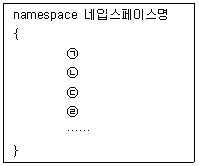
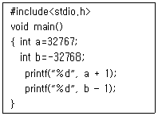
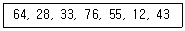
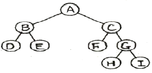
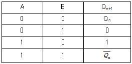
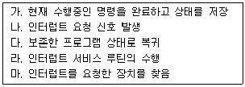
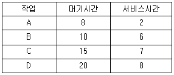
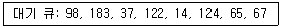
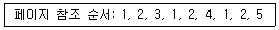

전자계산기조직응용기사 (2020-08-22 기출문제)
1과목: 전자계산기 프로그래밍
1. C 언어에서 프로그램의 변수 선언을 “int c;”로 했을 경우에 “&c”는 어떤 의미인가?
- C의 범위
- C의 절대값
- C의 저장된 값
- C의 시작 주소
(정답률: 75%)

2. C언어에서 논리 곱(AND)을 나타내는 논리 연산자는?
- ∥
- &&
- !
- ＞
(정답률: 90%)
3. C 언어에서 사용되는 함수들의 기능에 대한 설명으로 틀린 것은?
- strcat : 문자열의 연결
- strcpy : 문자열의 복사
- strcmp : 문자열의 비교
- strlen : 문자열내의 문자 위치 확인
(정답률: 78%)
4. C 언어에서 정수형 변수 a에 256이 저장되어 있다. 이를 7자리로 잡아 왼쪽으로 붙여 출력하고자 할 경우 printf( )내의 변환 문자 사용으로 옳은 것은?
- %7f
- %-7d
- %7d
- %7s
(정답률: 73%)
5. 하나의 오퍼랜드에 호출 할 벡터의 번호를 표현하여 가로채기를 요청하는 어셈블리어 명령은?
- TITLE
- INC
- INT
- REP
(정답률: 65%)
6. 객체지향 개념에서 같은 종류의 집단에 속하는 속성과 행위를 정의한 것으로 객체지향 프로그램의 기본적인 사용자 정의 데이터 형은?
- 메시지
- 메소드
- 클래스
- 복잡도
(정답률: 74%)
7. 한 위치의 문자열을 다른 위치의 문자열과 비교하는 어셈블리어 명령은?
- REPE
- SCAS
- CMPS
- MOVS
(정답률: 82%)
8. C언에서 printf 포맷 스트리링에서 “고정 소숫점 표기나 지수 표기 중 선택하여 출력”하는 포맷 스트링과 인수 타입의 형태로 맞는 것은?
- %u, int
- %f, double
- %g 또는 %G, double
- %e 또는 %E, double
(정답률: 49%)
9. 객체지향 설계에 있어서 정보은닉의 가장 근본적인 목적은?
- 코드를 개선하기 위하여
- 결합도를 높이기 위하여
- 모듈 라이브러리의 재사용을 위하여
- 고려되지 않은 영향들을 최소화 하기 위하여
(정답률: 81%)
10. C 언어에서 저장 클래스를 명시하지 않은 변수는 기본적으로 어떤 기억 클래스로 간주되는가?
- Auto
- Register
- Static
- Extern
(정답률: 77%)
11. 객체지향 프로그램 언어를 구분하고 이해하는데 중요한 요소가 아닌 것은?
- 객체
- 클래스
- 정보집중화
- 폴리모피즘
(정답률: 64%)
12. 다음은 프로그램에서 이름이 유효한 범위를 한정하는 namespace의 기본형태이다. ㉠~㉣에 들어갈 내용의 순서를 올바르게 나열한 것은?

- 클래스, 변수, 함수, 기타요소
- 변수, 클래스, 함수, 기타요소
- 변수, 함수, 클래스, 기타요소
- 클래스, 함수, 변수, 기타요소
(정답률: 50%)
13. 객체지향 언어에서 객체에게 어떤 행위를 하도록 지시하는 명령은 무엇인가?
- 상속
- 이벤트
- 메시지
- 메소드
(정답률: 67%)
14. 어셈블리 언어 명령 중 작성이 틀린 것은?
- MOV CX,DI
- GETCOUNT: MOV CX,DI
- GETCOUNT: CX,DI ; Initialize count
- GET_COUNT: MOV CX,DI ; Initialize count
(정답률: 57%)
15. 표준 C 언어의 Escape Character의 약호가 잘못 짝지어진 것은?
- \t : tab
- \b : backspace
- \f : new line
- \o : null character
(정답률: 83%)
16. C언어에서 문자형 자료 선언 시 사용하는 것은?
- double
- float
- char
- int
(정답률: 84%)
17. 다음 프로그램에서 int의 크기가 2바이트인 경우에 a와 b의 실행결과는?

- 32768, -32769
- 32769, -32767
- -32768, -32767
- -32768, -32769
(정답률: 74%)
18. 원시 프로그램을 하나의 긴 스트링으로 보고 문자 단위로 스캐닝 하여 문법적으로 의미있는 일련의 문자들로 분할해 내는 작업을 수행하는 것은?
- 바인딩
- 구문분석
- 어휘분석
- 정규표현
(정답률: 64%)
19. 서브프로그램(Subprogram)을 사용하는 목적으로 가장 거리가 먼 것은?
- 반복되는 부분을 별도로 작성하여 필요할 때 이용할 수 있다.
- 컴파일(compile)을 독립적으로 하기 때문에 오류를 쉽게 찾을 수 있다.
- 실행 속도는 빠르나 컴퓨터의 기억장소를 줄일 수는 없다.
- 한 개의 프로그램을 여러 사람이 분담하여 작성할 수 있다.
(정답률: 64%)
20. 시스템 프로그래밍에 가장 적합한 언어는?
- C
- COBOL
- BASIC
- FORTRAN
(정답률: 82%)
2과목: 자료구조 및 데이터통신
21. 데이터링크 프로토콜인 HDLC에서 프레임의 동기를 제공하기 위해 사용되는 구성 요소는?
- 플래그
- 제어부
- 정보부
- 프레임 검사 시퀀스
(정답률: 62%)
22. 오류 제어 방식 중 stop-and-wait ARQ에 대한 설명으로 틀린 것은?
- 연속적으로 데이터 프레임을 전송하고 에러가 발생한 데이터 프레임만 재전송한다.
- 구현이 간단하고 송신측에서 최대 프레임 크기의 버퍼가 1개만 있어도 된다.
- 각각의 프레임에 대해서 확인 메시지가 필요하다.
- 데이터 프레임의 순서 번호를 이용하면 프레임의 중복 수신여부를 알 수 있다.
(정답률: 60%)
23. 토큰 패싱 방식에서 토큰에 대한 실명으로 옳은 것은?
- 데이터 통신 시 에러를 체크하기 위해 사용된다.
- 전송할 데이터의 경로를 의미한다.
- 채널 사용권을 의미한다.
- 5바이트로 구성되어 있다.
(정답률: 57%)
24. IPv4에서 TCP의 세그먼트와 IP의 데이터그램 양쪽 모두에 존재하는 것은?
- Version
- Sequence number
- Urgent Pointer
- Header Length
(정답률: 59%)
25. IPv4에서 C클래스의 서브넷 마스크로 옳은 것은?
- 0.0.0.0
- 255.0.0.0
- 255.255.0.0
- 255.255.255.0
(정답률: 77%)
26. 주파수 대역폭이 fd(Hz)이고 통신로의 채널용량이 6fd(bps)인 통신로에서 필요한 S/N비는?
- 15
- 31
- 63
- 127
(정답률: 65%)
27. 피기백(Piggyback) 응답이란?
- 송신측이 대기시간을 설정하기 위한 목적으로 보낸 테스터 프레임용 응답을 말한다.
- 송신측이 일정한 시간 안에 수신측으로부터 ACK가 없으면 오류로 간주하는 것이다.
- 수신측이 별도의 ACK를 보내지 않고 상대편으로 향하는 데이터 전문을 이용하여 응답하는 것이다.
- 수신측이 오류를 검출한 후 재전송을 위한 프레임 번호를 알려주는 응답이다.
(정답률: 45%)
28. OSI 7계층에서 통신 매체에 대해 전기적, 기계적인 인턴페이스를 다루며, 비트를 전송하기 위해 전기적 신호로 부호화하여 전송하는 계층은?
- 응용계층
- 물리계층
- 네트워크계층
- 표현계층
(정답률: 76%)
29. 해밍 거리가 8일 때, 수신 단에서 정정 가능한 최대 오류 개수는?
- 2
- 3
- 4
- 5
(정답률: 59%)
30. 원천 부호화(source coding) 방식에 속하지 않는 것은?
- DPCM
- DM
- LPC
- FDM
(정답률: 44%)
31. 다음 자료에 대하여 삽입 정렬을 사용하여 오름차순으로 정렬한 경우 Pass 2의 결과는?

- 28, 33, 64, 76, 55, 12, 43
- 28, 64, 33, 76, 55, 12, 43
- 12, 28, 64, 33, 76, 55, 43
- 12, 28, 33, 55, 64, 76, 43
(정답률: 61%)
32. DBMS의 필수 기능에 해당하지 않는 것은?
- 관리기능
- 정의기능
- 조작기능
- 제어기능
(정답률: 73%)
33. 이진트리의 레벨 k에서 가질 수 있는 최대 노드수는?
- 2k
- 2k-1
- 2k+1
- 22k+1
(정답률: 71%)
34. Internal sort에 해당하지 않는 것은?
- bubble sort
- balanced merge sort
- quick sort
- radix sort
(정답률: 49%)
35. 데이터베이스 설계 순서로 옳은 것은?
- 개념적 설계 → 논리적 설계 → 물리적 설계
- 논리적 설계 → 물리적 설계 → 개념적 설계
- 물리적 설계 → 개념적 설계 → 논리적 설계
- 개념적 설계 → 물리적 설계 → 논리적 설계
(정답률: 85%)
36. 다음의 tree를 postorder로 traverse한 결과는?

- ABDECFGHI
- DBEFCHGIA
- ABCDEFGHI
- DEBFHIGCA
(정답률: 65%)
37. 데이터베이스의 3층 스키마에 해당하지 않는 것은?
- 관계 스키마
- 개념 스키마
- 외부 스키마
- 내부 스키마
(정답률: 85%)
38. 트랙잭션의 특성에 해당하지 않는 것은?
- Consistency
- Isolation
- Durability
- Automation
(정답률: 75%)
39. 선형 구조에 해당하지 않는 것은?
- 데크
- 큐
- 스택
- 트리
(정답률: 83%)
40. 해싱 기법에서 동일한 홈 주소로 인하여 충돌이 일어난 레코드들의 집합을 의미하는 것은?
- Overflow
- Bucket
- Collision
- Synonym
(정답률: 63%)
3과목: 전자계산기구조
41. 다음 진리표는 어떤 플립플롭인가? (단, A, B는 플립플롭의 입력, Qn은 현재상태, Qn+1은 다음 상태의 출력이다.)

- RS 플립플롭(flip-flop)
- D 플립플롭(flip-flop)
- JK 플립플롭(flip-flop)
- T 플립플롭(flip-flop)
(정답률: 67%)
42. 채널 명령어(Channel Command Word)로 알수 있는 내용으로 틀린 것은?
- 명령코드
- 데이터 전송속도
- 데이터 주소
- 플래그
(정답률: 59%)
43. 기억장치의 계층구조에서 접근 시간이 짧은 순에서 긴 순으로 바르게 나열한 것은?
- Register-RAM-Cache-HDD
- RAM-Cache-Register-HDD
- Register-HDD-Cache-RAM
- Register-Cache-RAM-HDD
(정답률: 74%)
44. CPU의 구성 요소가 아닌 것은?
- 제어장치
- 출력장치
- 연산장치
- 레지스터
(정답률: 68%)
45. 인터럽트 수행 순서를 바르게 나열한 것은?

- 나→가→라→마→다
- 나→가→마→라→다
- 나→마→가→다→라
- 나→라→가→마→다
(정답률: 70%)
46. 입·출력 인터페이스를 사용해야 하는 이유로 틀린 것은?
- 속도의 차이
- 전압레벨의 차이
- 전송 사이클 길이의 차이
- 마이크로 오퍼레이션의 차이
(정답률: 37%)
47. 명령어-수준 병렬성을 최대한 유지하기 위한 제약사항이 아닌 것은?
- 데이터 추상화
- 데이터 의존성
- 프로시저 의존성
- 자원충돌
(정답률: 42%)
48. Random Access 방식이 아닌 기억장치는?
- 자기 코어 장치
- 자기 디스크 장치
- 자기 테이프 장치
- 자기 드럼 장치
(정답률: 64%)
49. 3차원 렌더링 등 3D 작업의 효율적인 처리를 위해 특별히 사용되는 그래픽 가속 기능을 가진 프로세서의 명칭으로 옳은 것은?
- MPU
- SPU
- GPU
- FPU
(정답률: 80%)
50. 인터럽트 발생 시 CPU가 저장해야 할 내용이 아닌 것은?
- 프로그램 카운터
- 프로세스 상태 워드
- 레지스터에 저장된 모든 내용
- 메모리에 저장된 모든 내용
(정답률: 54%)
51. 8비트 레지스터 A, B에 각각 0xFF, 0xFE가 저장되어 있고, A+B 연산을 수행했을 때 오버플로(V), 캐리(C), 부호(S), 영(Z)을 나타내는 플래그 값으로 옳은 것은? (단, 음수 표현을 위해 2의 보수를 사용하는 컴퓨터 시스템이라 가정한다.)
- V=0, C=1, S=1, Z=0
- V=1, C=1, S=1, Z=1
- V=0, C=0, S=0, Z=0
- V=1, C=0, S=0, Z=1
(정답률: 39%)
52. 데이터 전송 인스트럭션(Instruction)에서 사용빈도가 가장 낮은 인스트럭션 형식은?
- 스택 인스트럭션 형식
- 메모리-메모리 인스트럭션 형식
- 레지스터-메모리 인스트럭션 형식
- 레지스터-레지스터 인스트럭션 형식
(정답률: 61%)
53. 2진수(binary) 0101을 그레이 코드(Gray Code)로 변환하면?
- 0101
- 0110
- 0111
- 1100
(정답률: 49%)
54. 8진수 (563)8의 7의 보수를 구하면?
- (325)8
- (324)8
- (215)8
- (214)8
(정답률: 54%)
55. 보조기억장치의 특징 중 틀린 것은?
- 대용량 기억장치이다.
- CPU가 직접 접근할 수 없다.
- 주기억장치보다 액세스 속도가 빠르다.
- 전원이 차단되어도 내용이 유지된다.
(정답률: 64%)
56. Flynn의 병렬 프로세서 구조를 분류할 때 MIMD에 해당하지 않는 것은?
- Symmetric Multiprocessor
- Nonuniform Memory Access
- Clusters
- Uni processor
(정답률: 50%)
57. 10진수 741을 2진화 10진 코드(BCD code)로 표시하면?
- 0010 1110 0101
- 0111 0100 0001
- 0010 1111 0101
- 0111 0110 0001
(정답률: 69%)
58. 복수 모듈 기억장치에 관한 설명으로 틀린 것은?
- 각 모듈이 공통으로 사용하는 MAR, MBR이 있다.
- 복수 모듈기억 장치를 사용함으로써 중앙처리장치의 유휴시간을 줄일 수 있다.
- m개의 모듈로 구성된 메모리에서의 m개의 연속적인 명령이 동시레 fetch될 수 있다.
- 기억장치에 접근 식 각 모듈에 번갈아 가면서 접근하도록 하는 것을 인터리빙이라고 한다.
(정답률: 43%)
59. 1워드당 32비트인 컴퓨터 명령어 시스템에서 OPCODE가 8비트, 주소모드가 1비트인 경우에 이 컴퓨터가 가질 수 있는 레지스터의 최대 수는? (단, 기억장소의 크기는 1메가바이트 이다.)
- 3
- 4
- 8
- 16
(정답률: 43%)
60. EX-OR 기능을 수행하기 위하여 필요한 NAND 게이트의 수는?
- 2개
- 3개
- 4개
- 5개
(정답률: 43%)
4과목: 운영체제
61. 교착상태의 4가지 발생 조건의 설명 중 틀린 것은?
- 점유와 대기 – 자원을 점유하고 있으면서 자원을 추가로 점유하기 위해 대기하는 프로세스가 있어야 한다.
- 상호배제 – 한 번에 한 개의 프로세스만이 공유 자원을 사용할 수 있다.
- 비선점 – 하나의 프로세스가 CPU를 할당받고 있을 때 우선순위가 높은 다른 프로세서가 강제로 CPU를 빼앗아 사용할 수 있다.
- 환형대기 – 대기하는 프로세스들이 자신에게 할당된 자원을 점유하면서 앞뒤에 있는 프로세스의 자원을 요구해야 한다.
(정답률: 57%)
62. HRN(Highest Response-ratio Next) 방식으로 스케줄링할 경우, 입력된 작업이 다음과 같을 때 우선 순위가 가장 높은 작업은?

- A
- B
- C
- D
(정답률: 64%)
63. 프로세스 내에서의 작업 단위로서 시스템의 여러 자원을 할당받아 실행하는 프로그램의 단위는?
- Task
- Spooling
- Thread
- Segment
(정답률: 66%)
64. 매크로 프로세서의 처리과정 중 기본적인 기능으로 틀린 것은?
- 매크로 정의 확장
- 매크로 호출 인식
- 매크로 정의 인식
- 매크로 정의 저장
(정답률: 62%)
65. OS의 가상기억장치 관리에서 프로세스가 일정 시간동안 자주 참조하는 페이지들의 집합은?
- Thrashing
- Deadlock
- Locality
- Working Set
(정답률: 63%)
66. 은행가 알고리즘(Banker’s Algorithm)은 교착상태의 해결 방법 중 어떤 기법에 해당하는가?
- Avoidance
- Detection
- Prevention
- Recovery
(정답률: 74%)
67. CPU 스케줄링 알코리즘을 평가하는 기준으로 틀린 것은?
- 응답 시간(response time)
- 바인딩 시간(binding time)
- CPU 이용률(CPU utilization)
- 반환 시간(turn-around time)
(정답률: 51%)
68. UNIX 시스템에서 사용자와 운영체제 서비스를 연결해 주는 인터페이스로 상위수준의 소프트웨어가 커널의 기능을 이용할 수 있도록 지원해주는 것은?
- 시스템 호출
- 파일 서브 시스템
- 하드웨어 제어 루틴
- 프로세스 제어 서브 시스템
(정답률: 50%)
69. 운영체제의 성능을 판단 할 수 있는 요소로 틀린 것은?
- 비용
- 신뢰도
- 처리 능력
- 사용가능도
(정답률: 72%)
70. 디스크 액세스 작업 중 가장 많은 시간이 걸리는 작업은?
- seek time
- latency time
- transmission time
- channels selection
(정답률: 60%)
71. 시스템소프트웨어의 구성에서 처리프로그램과 관계가 없는 것은?
- Job Scheduler
- Language Translate Program
- Service Program
- Problem Program
(정답률: 53%)
72. 디스크 입·출력 요청 대기 큐에 다음과 같은 순서로 기억되어 있다. 현재 헤드가 53에 있을 때, 이들 모두를 처리하기 위한 총 이동 거리는 얼마인가? (단, FCFS 방식을 사용한다.)

- 320
- 640
- 710
- 763
(정답률: 64%)
73. 다중 처리기 운영체제 구조 중 Master/Slave(주/종)처리기에 대한 설명으로 틀린 것은?
- 비대칭 구조를 갖는다.
- 주 프로세서는 운영체제를 수행한다.
- 주 프로세서가 고장 날 경우에는 전체 시스템은 작동한다.
- 종 프로세서는 입·출력 발생 시 주 프로세서에게 서비스를 요청한다.
(정답률: 73%)
74. 다음의 프로세스 상태 전이 중 전이의 원인이 프로세스 자신에게 있는 것은?
- 블럭
- 디스패치
- 웨이크 업
- 타이머 런 아웃
(정답률: 38%)
75. 병행 프로그래밍 기법에서 발생할 수 있는 오류에 대한 방지 방법으로 틀린 것은?
- 모니터(Monitor)
- 비동기화(Asynchronization)
- 상호 배제(Mutual Exclusion)
- 세마포어(Semaphore)
(정답률: 47%)
76. 계수 기반 페이지 교체 알고리즘이 아닌 것은?
- First-In First-Out
- Least Frequently Used
- Most Frequently Used
- Least Recently Used
(정답률: 58%)
77. 4개의 페이지를 수용할 수 잇는 주기억장치가 있으며, 초기에는 모두 비어 있다고 가정한다. 다음의 순서로 페이지 참조가 발생할 때, LRU페이지 교체 알고리즘을 사용할 경우 몇 번의 페이지 결함이 발생하는가?

- 4회
- 5회
- 6회
- 7회
(정답률: 59%)
78. 천재지변이나 외부 침입자로부터의 보안을 의미하며, 연기나 열을 감지하고 사람의 음성, 지문 등을 확인 할 수 있는 보안 방법은?
- 내부 보안
- 운용 보안
- 시설 보안
- 사용자 인터페이스 보안
(정답률: 52%)
79. 부트 로더(BOOT LOADER)의 설명으로 옳은 것은?
- 램(RAM)에 기억되어 있다.
- 운영체제의 다른 이름이다.
- 전원을 켤때 작동하는 것이며, reset스위치와는 관련이 없다.
- 메모리가 비어 있는 상태에서 처음에 실행되는 프로그램이다.
(정답률: 64%)
80. 시스템은 일정 시간 단위로 CPU를 한 사용자에서 다음 사용자로 신속하게 전환함으로써, 각각의 사용자들은 실제로 자신만이 컴퓨터를 사용하고 있는 것처럼 사용할 수 있는 처리 방식은?
- Batch Processing System
- Off-Line Processing System
- Real Time Processing System
- Time-Sharing Processing System
(정답률: 70%)
5과목: 마이크로 전자계산기
81. 입·출력 장치끼리 인터럽트를 발생한 주변장치를 찾아내는 방식은?
- 폴링 인터럽트
- 벡터 인터럽트
- 마스크 인터럽트
- 데이지 체인
(정답률: 40%)
82. 비동기식(Asynchronous) 직렬(Serial) 입·출력 인터페이스의 설명 중 옳은 것은?
- 데이터를 block으로 묶어서 전송하는 방식이다.
- 변복조장치(MODEM)를 사용한 장거리 데이터 전송은 불가능하다.
- 단위 데이터의 전후에 스타트(start) 신호와 스톱(stop) 신호가 필요하다.
- 고속 데이터 전송이 필요한 입출력 장치의 인터페이스에 적합하다.
(정답률: 49%)
83. 표(Table)형식의 자료를 처리 할 때 가장 유용하게 사용할 수 있는 명령어의 주소 지정 방식은?
- Relative Addressing
- Indexed Addressing
- Absolute Addressing
- Implied Addressing
(정답률: 60%)
84. 마이크로컴퓨터의 시스템 소프트웨어 중 사용자가 작성한 프로그램을 실행하면서 에러를 검출할 때 사용되는 것은?
- 로더(loader)
- 디버거(debugger)
- 컴파일러(compiler)
- 텍스트 에디터(text editor)
(정답률: 69%)
85. RISC 컴퓨터의 특징으로 틀린 것은?
- 명령어 수가 최소화 된다.
- 파이프라인이 효율적이다.
- 주소지정 방식이 다양하다.
- 명령어 길이가 고정적이어서 해독하기가 쉽다.
(정답률: 42%)
86. 컴퓨터 시스템을 사용하기 위해 근본적으로 필요한 프로그램으로 운영체제(OS), 각종 언어의 컴파일러, 링커, 로더, 텍스트 에디터, 라이브러리 프로그램, 진단 프로그램 등을 무엇이라 하는가?
- Application Program
- System Program
- Problem Program
- Macro Program
(정답률: 69%)
87. DMA(Direct Memory Access) 방식에 대한 설명으로 틀린 것은?
- 입·출력 전송 시 DMA는 CPU에 버스 사용을 요청한 후 CPU의 레지스터를 경유하여 자료를 전송하게 된다.
- DMA제어기는 Address register, Word counter, Control and Status register로 구성되어 있다.
- DMA는 블록으로 대용량의 데이터를 전송할 수 있다.
- Cycle Stealing방식은 한 번에 하나의 워드만을 전송하는 방식이다.
(정답률: 31%)
88. DRAM에 관한 설명으로 틀린 것은?
- 읽기 전용 메모리이다.
- refresh 회로가 필요하다.
- 가격이 저렴하고, 전력 소모가 적다.
- 경제성이 뛰어나 주기억장치로 많이 사용된다.
(정답률: 59%)
89. ADD B라는 인스트럭션의 형식은 무엇인가?
- 1-주소 인스트럭션
- 2-주소 인스트럭션
- 3-주소 인스트럭션
- 자료자신 인스트럭션
(정답률: 58%)
90. 번지부에 표현된 값을 특정값과 계산하여 상대적인 위치로 데이터를 지적하는 번지 지정 방식은?
- direct address
- indirect address
- immediate data
- relative address
(정답률: 54%)
91. 스택(Stack)에 대한 설명으로 틀린 것은?
- 서브루틴 호출 시 복귀 주소가 저장된다.
- 스택은 선입선출(FIFO, First-In First-Out)구조로 되어있다.
- 스택 포인터에 의해 가장 최근에 들어온 데이터의 주소가 지시되어 진다.
- 스택에 데이터를 저장하기 위해서는 PUSH명령어를 사용한다.
(정답률: 68%)
92. 내부 인터럽트의 발생 조건이 아닌 것은?
- 레지스터 오버플로우
- “0”으로 나누기
- 스택 오버플로우
- I/O 장치의 데이터 전송 요구
(정답률: 68%)
93. 마이크로프로세서 내에서 연산 후 결과가 저장되는 레지스터는?
- 누산기
- 인덱스 레지스터
- 프로그램 카운터
- 인스트럭션 레지스터
(정답률: 61%)
94. memory mapped I/O에 관한 설명 중 틀린 것은?
- I/O 전달 명령과 memory 전달 명령은 같다.
- 기억장소상의 주소와 입출력 주소를 특별히 구분하지 않는다.
- 기억장소의 주소 범위는 인터페이스 주소할당에 영향을 받지 않는다.
- 명령어 활용면에서 isolated 입출력에 비해서 유리하다.
(정답률: 35%)
95. ALU의 기능에 대한 설명 중 틀린 것은
- 가산을 한다.
- AND 동작을 한다.
- complement 동작을 한다.
- PC를 1만큼 증가시킨다.
(정답률: 52%)
96. 동시에 여러 개의 입·출력장치를 제어할 수 있는 채널은?
- 멀티플렉서 채널
- 레지스터 채널
- 직렬 채널
- Simplex 채널
(정답률: 75%)
97. 가상(virtual) 메모리에 관한 설명 중 옳은 것은?
- 데이터를 미리 주기억장치에 넣어준다.
- 주기억장치에서 많은 데이터를 한 번에 가져온다.
- 보조기억장치를 이용한 주기억장치의 용량확보이다.
- 자주 참조되는 프로그램과 데이터를 모은 메모리이다.
(정답률: 67%)
98. CPU주변회로의 Read/Write signal 이나 Chip Select signal등의 신호는 어느 버스에 싣게 되는가?
- 자료 버스
- 주소 버스
- 제어 버스
- 보조 버스
(정답률: 68%)
99. CPU 관여 없이 주기억장치와 입·출력장치 사이에서 입·출력을 제어하는 것은? (문제오류로 실제 시험에서는 1, 2번이 정답처리 되었습니다. 여기서는 1번을 누르면 정답 처리 됩니다.)
- 채널에 의한 입·출력
- DMA에 의한 입·출력
- 인터럽트에 의한 입·출력
- 프로그램에 의한 입·출력
(정답률: 64%)
100. 특정한 비트만 0으로 하기 위한 연산은?
- OR 연산
- AND 연산
- EX-OR 연산
- 보수 연산
(정답률: 38%)